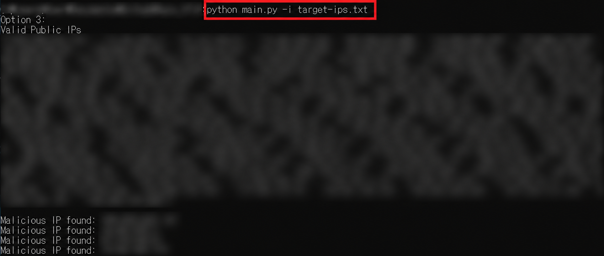

보안관제·보안솔루션 운영 자동화와 업무 표준화
일일 보안관제에서 반복하던 공격 IP 이력 확인, 평판 조회, 등록·공유 자료 작성을 Python과 Excel VBA로 개선했습니다. C-TAS 업무 흐름에 Auto-VTIP를 연결하고, 엑셀에서 Python 조회 결과를 받아 기록하는 연계 코드를 구성했습니다. CIDR 계산·방화벽 대역 비교 도구와 운영 매뉴얼을 함께 정리해, 반복 작업을 줄이고 업무를 인수인계할 수 있는 형태로 남겼습니다.
자동화 구현 내용과 운영 표준화 결과
시작한 이유와 맡은 일
보안관제 보고서에서 공격 IP를 정리하고, 기존 차단 이력과 대조한 뒤 평판을 확인하는 일이 반복됐습니다. 검토 결과는 다시 장비 등록 양식과 관제센터·C-TAS 공유 형식으로 옮겨야 했습니다. 여러 파일에서 같은 IP를 찾고 같은 정보를 재입력하는 구간을 줄이고자 했습니다.
정보보안 담당자로서 관제 이벤트 검토, 블랙리스트 작성, 공격 IP·패턴 적용과 정보 공유 업무를 수행했습니다. NAC, DLP, EPP, DRM, 무선 AP, 유해사이트차단 등의 직접 운영 경험을 바탕으로 반복 업무를 도구와 절차로 정리했습니다.
C-TAS·Auto-VTIP로 구현한 보안관제 자동화
- IP와 /24 대역의 기존 처리 이력 확인
- 작업용 시트에 IP·국가코드를 정리하고 /24 대역을 생성했습니다. VLOOKUP과 COUNTIF로 연도별 이력 파일과 현재 월의 누적 시트를 대조하고, 동일 IP와 동일 대역의 등록 여부를 별도로 표시해 운영자가 신규 검토 대상을 선별하도록 구성했습니다.
- Python 기반 IP 목록 평판 조회
- Auto-VTIP는 텍스트 파일의 IP 목록을 읽어 사설·일부 특수 대역을 제외하고 VirusTotal API v3의 IP 분석 정보를 조회합니다. 악성 판정 수가 1개 이상인 IP를 모아 출력하고, 일부 서버 오류 응답에는 재시도를 설정했습니다. 개별 IP를 하나씩 조회하던 작업을 목록 단위로 처리하도록 바꿨습니다.
- Excel VBA–Python–JSON 결과 연계
- C-TAS 통합문서의 VBA가 작업용 시트의 IP를 수집해
vt_scan.py를 호출하도록 구성했습니다. Python의 JSON 응답을 VBA-JSON으로 해석해 IP별 결과를 J열에 기록함으로써, 별도 조회 결과를 엑셀에 옮기는 단계를 줄였습니다. - 누적대장과 등록·공유 자료 생성
- 검토한 IP·대역·국가코드를 월별 시트에 누적하고, 날짜·제공자·처리 상태·종료일을 기록하는 매크로를 작성했습니다. 미적용·미등록 상태를 기준으로 필요한 행을 추출해 장비 등록용 시트와 관제센터·C-TAS 공유용 시트를 만들도록 했습니다.

CIDR 계산과 기존 방화벽 대역 비교
차단 후보가 기존 정책에 포함되는지 확인할 때는 IP 문자열의 일치 여부 외에 네트워크 범위를 비교해야 했습니다. /19, /20, /24처럼 크기가 다른 대역을 검토할 수 있도록 별도의 Excel VBA 도구와 비교 수식을 작성했습니다.
- 시작·끝 주소의 일괄 계산
CalculateIPRange로 IP/CIDR을 분리하고 마스크를 계산해 각 대역의 최소·최대 주소를 행 단위로 출력했습니다. 여러 대역의 실제 주소 범위를 한 번에 확인하도록 했습니다.- 기존 대역에 포함되는 IP 식별
- 시작 주소·끝 주소·검토 대상 IP를 크기 비교가 가능한 숫자로 변환하고, 대상 IP가 포함되는 대역의 개수를 계산했습니다. 포함 건수가 0인지, 1 이상인지 구분해 신규 등록 검토와 중복 범위 확인을 지원했습니다.
운영 절차와 문의 대응의 표준화
자동화 도구의 설치·실행 방법과 결과 해석을 업무 매뉴얼에 포함했습니다. 솔루션별 신청, 승인, 설정, 장애 대응의 순서와 주의사항도 화면 설명과 함께 정리해 운영과 인수인계에 활용할 수 있도록 했습니다.
- 접속·정책 문의의 확인 순서. NAC의 IP 신청·차단 원인·휴면 해제, DLP의 업로드 예외·정책 반영, DRM의 계정·문서 열람 문제, 무선 AP의 MAC·권한·연결 오류를 정리했습니다.
- 승인과 실제 반영의 확인. SSL-VPN, 서버접근제어, 통합계정 등은 신청 승인 이후의 계정 생성·권한 부여·기간 확인과 담당자 이관 절차를 문서화했습니다.
- 문의·조치 사례의 축적. 요청내용, 처리분류, 처리내용, 인수인계 확인 항목을 두어 반복 문의의 대응 방법을 남겼습니다. 매뉴얼은 15개 시트로 구성했으며, 문의 기록에는 요청내용이 기재된 254행이 남아 있습니다.
일일 업무에 적용한 흐름
- 관제 보고서에서 공격 IP 수합
- IP·/24 대역의 연도별·월별 이력 대조와 신규 후보 선별
- Auto-VTIP 단독 실행 또는 Excel–Python 연계로 평판 조회
- 운영자의 조회 결과·오류 확인과 차단 범위 검토
- 월별 누적대장 기록과 등록·공유용 자료 생성
- 담당자의 실제 정책 적용·전달 확인
엑셀 연계 결과의 X는 악성 판정 수 1개 이상, O는 0개, Error는 조회 실패를 뜻합니다. O만으로 IP의 안전성을 보장하지 않으며, 차단 여부와 대역의 영향은 담당자가 검토합니다. 자동화한 범위는 데이터 정리·조회·자료 생성까지입니다.
결과
공격 IP 검토에 필요한 정보를 엑셀 대장과 Python 도구 사이에서 연결하고, 검토 결과를 등록·공유 자료로 재사용할 수 있게 했습니다. C-TAS 업무 개선과 인계를 진행했으며, 이후 관리 엑셀 변경과 블랙리스트 등록 절차도 업무 참고자료에 반영했습니다.
기존 이력 대조, 목록 평판 조회, 목적별 자료 생성으로 반복 입력과 조회를 줄이고, CIDR 계산·대역 비교 도구로 정책 검토를 지원했습니다. 운영 절차와 문의 대응 사례를 함께 남겨 다른 담당자가 업무를 이어받을 수 있는 기반을 마련했습니다.
사용 기술
Python · requests · VirusTotal API v3 · Excel VBA · WScript.Shell · JSON · VBA-JSON · VLOOKUP / COUNTIF · IP / CIDR